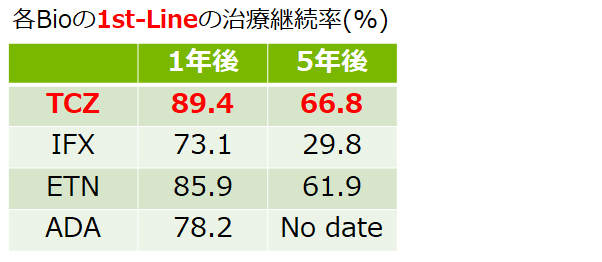

1st-BIOの継続率はアクテムラが最も高い（BiRD registry）
- [目的]Osaka University Biologics for Rheumatic Diseases（BiRD）registryにおいて1剤以上のDMARD効果不十分な症例に対する、1剤目の生物学的製剤の治療継続率について検討
- [対象]1stBIOとして、TCZ,IFX,ETN,ADAが投与された401例

Hishitani, Y, et al.: Scand. J. Rheumatol., 42（4）, 253-259, 2013